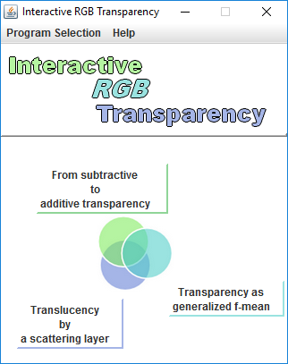

Interactive RGB Transparency is an open source tool dedicated to transparency visualization on numerical color images. The background and the foreground can be either a uniform color or a download image while the transparency rate and transparency type can be modified interactively. The inverse operation for which the transparency effect is removed, can also be applied.
The transparency is described in three different ways that the user can select in the first window.

From additive to subtractive transparency
The purely additive and purely subtractive transparency are highlighted and a parameter enables tuning the transparency effect between these two ideal cases according to different mixing laws presented in [1].
Transparency as a generalized f-mean
Transparency can be described as a weighted mean between the background and the foreground. While the ideal additive and ideal subtractive transparency correspond to the arithmetic and geometric mean respectively, we propose an extension by the use of a weighted generalized f-mean including the arithmetic and geometric means but also the harmonic and quadratic means as well as the Kubelka-Munk function.
Translucency by a scattering layer
The prediction of the color appearance due to a translucent layer placed in front of a background requires taking into account the multiple reflections between the scattering layer and the background.
The user can modify the unit thickness layer reflection described as the combination of a proportion of the opaque foreground and an achromatic part.
The transparency rate is tuned by the relative layer thickness.
[1] L. Simonot, M. Hébert, Between additive and subtractive color mixings: intermediate mixing models, JOSA A 31 (2014) 58-66.
Lionel Simonot, Mathieu Hébert
Andy Poudret, Florian Nadaud